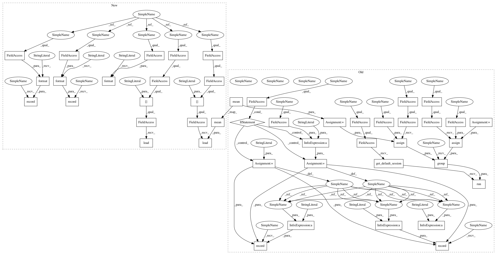

b50695e45350a8a4d11bd60ba1801d6ae93eddbf,src/garage/tf/regressors/continuous_mlp_regressor.py,ContinuousMLPRegressor,fit,#ContinuousMLPRegressor#Any#Any#,116
Before Change
def fit(self, xs, ys):
if self.normalize_inputs:
// recompute normalizing constants for inputs
new_mean = np.mean(xs, axis=0, keepdims=True)
new_std = np.std(xs, axis=0, keepdims=True) + 1e-8
tf.compat.v1.get_default_session().run(
tf.group(
tf.compat.v1.assign(self.x_mean_var, new_mean),
tf.compat.v1.assign(self.x_std_var, new_std),
))
inputs = [xs, ys]
loss_before = self.optimizer.loss(inputs)
if self.name:
prefix = self.name + "/"
else:
prefix = ""
tabular.record(prefix + "LossBefore", loss_before)
self.optimizer.optimize(inputs)
loss_after = self.optimizer.loss(inputs)
tabular.record(prefix + "LossAfter", loss_after)
tabular.record(prefix + "dLoss", loss_before - loss_after)
def predict(self, xs):
return self.f_predict(np.asarray(xs))
After Change
with tf.name_scope("update_opt"):
self._optimizer.update_opt(**optimizer_args)
def fit(self, xs, ys):
Fit with input data xs and label ys.
if self._normalize_inputs:
// recompute normalizing constants for inputs
self.model.networks["default"].x_mean.load(
np.mean(xs, axis=0, keepdims=True))
self.model.networks["default"].x_std.load(
np.std(xs, axis=0, keepdims=True) + 1e-8)
inputs = [xs, ys]
loss_before = self._optimizer.loss(inputs)
tabular.record("{}/LossBefore".format(self._name), loss_before)
self._optimizer.optimize(inputs)
loss_after = self._optimizer.loss(inputs)
tabular.record("{}/LossAfter".format(self._name), loss_after)
tabular.record("{}/dLoss".format(self._name), loss_before - loss_after)
def predict(self, xs):
In pattern: SUPERPATTERN
Frequency: 3
Non-data size: 46
Instances
Project Name: rlworkgroup/garage
Commit Name: b50695e45350a8a4d11bd60ba1801d6ae93eddbf
Time: 2019-09-26
Author: 38871737+avnishn@users.noreply.github.com
File Name: src/garage/tf/regressors/continuous_mlp_regressor.py
Class Name: ContinuousMLPRegressor
Method Name: fit
Project Name: rlworkgroup/garage
Commit Name: a295cb67923eeb5ab5390f1541c04e70f67e893a
Time: 2019-10-02
Author: naeioi@hotmail.com
File Name: src/garage/tf/regressors/bernoulli_mlp_regressor.py
Class Name: BernoulliMLPRegressor
Method Name: fit
Project Name: rlworkgroup/garage
Commit Name: 7d2ec360e1704f9d13e58d97466438db71aa3059
Time: 2019-09-28
Author: zequnyu@usc.edu
File Name: src/garage/tf/regressors/categorical_mlp_regressor.py
Class Name: CategoricalMLPRegressor
Method Name: fit
Project Name: rlworkgroup/garage
Commit Name: b50695e45350a8a4d11bd60ba1801d6ae93eddbf
Time: 2019-09-26
Author: 38871737+avnishn@users.noreply.github.com
File Name: src/garage/tf/regressors/continuous_mlp_regressor.py
Class Name: ContinuousMLPRegressor
Method Name: fit